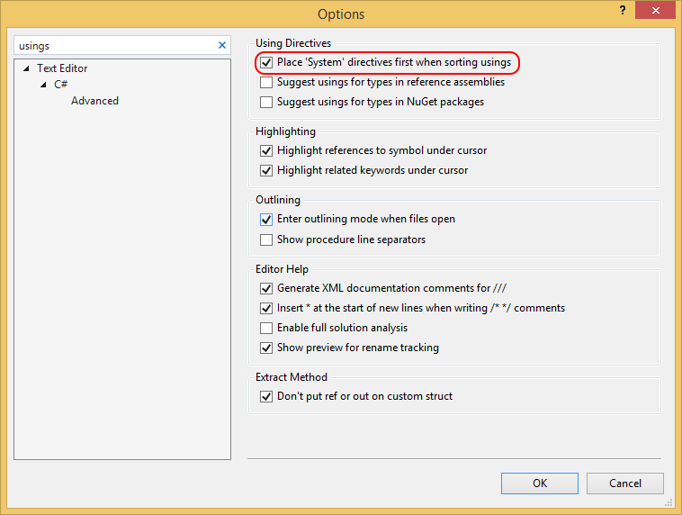

Стандарты написания программного кода на языке C#
Введение
Целью создания данного списка правил является попытка установить стандарты написания кода на языке C#, которые были бы удобными и практичными одновременно. Не все данные правила имеют четкое обоснование. Некоторые из них просто приняты у нас в качестве стандартов. В конце концов, не столько важен сам выбор, а важно то, как строго вы следуете выбранным правилам.
Статический анализатор кода VisualStudio (который также известен как FxComp) и StyleCop могут автоматически применять многие из правил кодирования и оформления путем анализа скомпилированных сборок. Вы можете сконфигурировать их таким образом, чтобы анализ производился во время компиляции или был неотъемлемой частью непрерывной или ежедневной сборки. Этот документ просто добавляет дополнительные правила и рекомендации, но его вспомогательный сайт www.csharpcodingguidelines.com предоставляет список правил анализа кода, необходимых в зависимости от того, с какой базой кода вы работаете.
Некоторые воспринимают стандарты написания кода как некие ограничения, которые ущемляют свободу творчества. Но тем не менее такой подход оправдан и проверен в течение многих лет. Почему? Потому что не каждый разработчик знает:
Базовые принципы
Данная статья не в силах охватить все ситуации, с которыми вы можете столкнуться. В любом спорном случае вам следует ссылаться на базовые принципы, которые применимы в любой ситуации вне зависимости от контекста. К ним относятся:
Рекомендации по проектированию классов
Класс или интерфейс должны иметь единственное предназначение (ELMA1000)
Класс или интерфейс должен иметь единственное предназначение в рамках системы, в которой он используется. Как правило, класс служит одной из целей: либо он описывает тип, например, e-mail или ISBN (международный стандартный книжный номер), либо представляет из себя абстракцию некоторой бизнес-логики, либо он описывает структуру данных, либо отвечает за взаимодействие между другими классами. Он никогда не должен в себе комбинировать эти задачи. Это правило известно как Принцип единой ответственности, один из принципов SOLID.
Совет: Класс со словом And в названии — это явное нарушение данного правила.
Совет: Для взаимодействия между классами используйте паттерны проектирования. Если вам не удается применить ни один из паттернов к классу, возможно, он берет на себя слишком большую ответственность.
Примечание: Если вы создаете класс, который описывает примитивный тип, вы можете значительно упростить его использование, если сделаете его неизменяемым.
Создавайте новые экземпляры класса с помощью конструктора таким образом, чтобы в результате вы получили полностью готовый к использованию объект (ELMA1001)
Созданный объект не должен нуждаться в установке дополнительных свойств перед использованием, в каких бы целях его ни планировалось бы применять. При этом если конструктор нуждается в более чем трех параметрах (что нарушает правило ELMA1561), возможно, что класс берет на себя слишком большую ответственность (нарушение правила ELMA1000).
Интерфейс должен быть небольшим и должен быть сфокусирован на решении одной задачи (ELMA1003)
Интерфейс должен иметь имя, которое ясно описывает его предназначение или роль, которую он выполняет в системе. Не объединяйте слабо связанные элементы в один интерфейс только потому, что они относятся к одному классу. Формируйте интерфейсы на основании функциональности, за которую отвечают вызываемые методы или на основе конкретной задачи, которую этот интерфейс выполняет. Это правило более известно как Принцип сегрегации интерфейса.
Используйте интерфейс, а не базовый класс, чтобы поддерживать несколько реализаций (ELMA1004)
Если вы хотите выставить точку расширения вашего класса, выставляйте его в качестве интерфейса, а не базового класса. Вам не захочется заставлять пользователей этой точки расширения делать свои реализации на основе базового класса, который может вести себя нежелательным образом. Впрочем, для их удобства вы можете создать реализацию по умолчанию (абстрактный класс), которая может служить в качестве отправной точки.
Используйте интерфейс для реализации слабой связанности между классами (ELMA1005)
Интерфейсы – это отличный инструмент для реализации слабой связанности между классами:
Избегайте статических классов (ELMA1008)
За исключением статических классов, которые используются для создания методов расширений, статические классы очень часто приводят к плохому коду. К тому же их очень сложно, если вообще возможно, тестировать в изоляции до тех пор, пока вы не прибегнете к каким-либо очень изощренным инструментам.
Примечание: Если вам действительно необходим статический класс, пометьте его как static. В этом случае компилятор запретит создание экземпляров этого класса и инициализирует ваш класс перед первым обращением к нему. Это избавит вас от необходимости использовать приватный конструктор.
Не скрывайте предупреждения компилятора с помощью ключевого слова new (ELMA1010)
Это предупреждение компилятора CS0114 появляется в случае нарушения полиформизма – одного из наиболее значимых принципов объектно-ориентированного программирования. Предупреждение исчезает при добавлении ключевого слова new. При этом дочерние классы становятся сложными для понимания. Рассмотрим следующий пример:
public class Book
{
public virtual void Print()
{
Console.WriteLine("Printing Book");
}
}
public class PocketBook : Book
{
public new void Print()
{
Console.WriteLine("Printing PocketBook");
}
}
В этом случае класс будет иметь не то поведение, которое вы будете ожидать от него при его использовании:
PocketBook pocketBook = new PocketBook();
pocketBook.Print(); // Выведет "Printing PocketBook"
((Book)pocketBook).Print(); // Выведет "Printing Book"
Не должно быть разницы в том, вызывается ли метод Print() через ссылку на базовый класс или в качестве метода производного класса.
Функции, которые используют базовый тип, должны иметь возможность использовать подтипы базового типа, не зная об этом (ELMA1011)
Другими словами, поведение наследуемых классов не должно противоречить поведению, заданному базовым классом, то есть поведение наследуемых классов должно быть ожидаемым для кода, использующего переменную базового типа. Наиболее известным примером нарушения этого правила является исключение NotImplementedException, когда оно возникает при переопределении метода базового класса.
Примечание: Этот принцип также известен, как Принцип подстановки Барбары Лисков, один из принципов S.O.L.I.D.
Не ссылайтесь на производные классы из базового класса (ELMA1013)
Наличие зависимостей в родительском классе от его дочерних классов нарушает принципы объектно-ориентированного программирования и не дает возможности другим разработчикам наследоваться от вашего базового класса.
Объект должен обладать ограниченным знанием о других объектах, которые не имеют непосредственного отношения к этому объекту (ELMA1014)
Если ваш код напоминает код, который приведен ниже, то вы нарушаете Закон Деметры.
someObject.SomeProperty.GetChild().Foo()
Объект не должен открывать доступ к классам, от которых он зависит, потому что объекты-пользователи могут неправильно использовать свойства и методы для получения доступа к объектам, находящимся за ним. Делая так, вы позволяете вызываемому коду объединиться в одно целое с классом, который вы используйте. Таким образом, вы ограничиваете возможность замены одной реализации на другую в будущем.
Примечание: Использование класса, реализующего текучий интерфейс (Fluent Interface), может показаться нарушением данного правила. Но вызываемые методы просто передают контекст вызова следующему звену. Таким образом, это не вызывает противоречий.
Исключение: При использовании инверсии управления и фреймворков инъекции зависимостей часто требуется, чтобы зависимости выставлялись в качестве публичных свойств. До тех пор пока эти свойства не используются ни для чего другого, кроме как реализации инъекции зависимостей, это можно не рассматривать как нарушение правила.
Избегайте двунаправленной зависимости (ELMA1020)
Двунаправленная зависимость означает, что два класса знают о публичных методах друг друга или зависят от внутреннего поведения друг друга. Рефакторинг или замена одного из этих двух классов требуют изменений в обоих классах и могут повлечь за собой много непредвиденной работы. Наиболее очевидное решение – это создание интерфейса для одного из этих классов и использование инъекции зависимостей.
Исключение: Доменные модели (Domain Model), применяемые в проектировании на основе предметной области (Domain Driven Design), могут использовать двунаправленные зависимости, описывающие ассоциации из реального мира. В таких случаях следует удостовериться, что они действительно необходимы, и по мере возможности избегать их.
Классы должны иметь состояние и поведение (ELMA1025)
Если в вашем репозитории находится множество классов, которые служат только для описания данных, то, скорей всего, у вас есть несколько классов (статических), содержащих в себе много логики обработки этих данных (смотрите правило ELMA1008). Используйте принципы объектно-ориентированного программирования согласно рекомендациям в этом разделе, переместите вашу логику обработки данных к тем данным, которые ей используются.
Исключение: Единственным исключением из этого правила являются классы, используемые для передачи данных между подсистемами приложения, также называемые Data Transfer Objects, или классы, служащие оберткой для параметров метода.
Классы должны поддерживать свое внутренние состояние непротиворечивым (ELMA1026)
Проверяйте аргументы, передаваемые публичным методам. Например:
public void SetAge(int years)
{
AssertValueIsInRange(years, 0, 200, nameof(years));
this.age = years;
}
Проверяйте внутренние состояния с помощью инвариантов:
public void Render()
{
AssertNotDisposed();
// ...
}
Рекомендации по проектированию членов класса
Свойства класса должны иметь возможность быть установленными в любом порядке (ELMA1100)
Свойства не должны зависеть от других свойств. Другими словами, не должно быть разницы в том, какое свойство мы устанавливаем в первую очередь. Например, сначала DataSource, затем DataMember или наоборот.
Используйте метод вместо свойства (ELMA1105)
Используйте методы вместо свойств, если:
Исключение: Заполнение внутреннего кэша или реализация lazy-loading являются хорошими исключениями из этого правила.
Не используйте взаимоисключающие свойства (ELMA1110)
Если у вас имеются свойства, которые не могут быть использованы в одно и то же время, то это значит, что они представляют из себя две взаимоисключающие концепции. Даже если эти концепции могут иметь некоторую общую логику и состояние, то очевидно, что они имеют различные правила, которые не сочетаются друг с другом.
Нарушение этого правила часто можно встретить в доменной модели, когда свойства инкапсулируют в себе всевозможные виды условной логики, содержащей взаимоисключающие правила. Это зачастую вызывает эффект волны и обслуживание такого кода становится более трудоемким.
Метод или свойство должны иметь единственное предназначение (ELMA1115)
Так же, как и класс (смотрите правило ELMA1000), каждый метод должен иметь одну зону ответственности.
Не делайте публичными объекты, описывающие состояние, посредством статических членов (ELMA1125)
Объекты с состоянием (stateful object) – это объекты, которые содержат в себе множество свойств и логики, которую эти свойства инкапсулируют. Если вы сделайте такой объект публичным через статическое свойство или метод другого объекта, то будут плохо поддаваться рефакторингу и юнит-тестированию классы, которые зависят от объекта с состоянием. В общем случае, использование описанной выше конструкции – отличный пример нарушения множества рекомендаций, описанных в этой главе.
Классическим примером служит свойство HttpContext.Current в ASP.NET. Многие смотрят на класс HttpContext, как на источник большого количества грязного кода. По факту, одно из правил тестирования — изолируйте уродливые вещи (Isolate the Ugly Stuff) — часто относится к этому классу.
Возвращайте IEnumerable<T> или ICollection<T> вместо какой-либо конкретной коллекции (ELMA1130)
Как правило, не нужно давать пользователям возможность изменять внутреннию коллекцию, которая возвращается в результате вызова метода, так как это нарушает инкапсуляцию. Не возвращайте массив, лист или другой класс коллекции напрямую. Вместо этого возвращайте IEnumerable<T> или, если пользователю требуется знать количество элементов в коллекции, ICollection<T>.
Примечание
.Net 4.5+
Вы также можете применять IReadOnlyCollection<T>, IReadOnlyList<T> или IReadOnlyDictionary<TKey, TValue>.
Свойства, методы или аргументы, которые представляют из себя строку или коллекцию, никогда не должны быть равны null (ELMA1135)
Возвращение null как результата выполнения метода, может быть неожиданностью для пользователя. Всегда возвращайте пустую коллекцию или пустую строку вместо нулевой ссылки. Кроме всего прочего, это избавит вас от необходимости засорять ваш код дополнительными проверками на null или, что еще хуже, использовать string.IsNullOrEmpty().
Определяйте параметры настолько специфичными, насколько это возможно (ELMA1137)
Если элемент класса в качестве параметров требует часть данных другого класса, определяйте типы данных этих параметров как можно более конкретными и не принимайте в качестве параметра весь объект целиком. Например, рассмотрим метод, который в качестве параметра требует передать строку подключения, описанную в некоем центральном интерфейсе IConfiguration. Вместо того, чтобы зависеть от всей конфигурации, реализующий этот интерфейс, передайте только строку подключения. Это не только позволит вам уменьшить количество зависимостей в коде, но и улучшит его сопровождаемость в отдаленной перспективе.
Заметка: Чтобы легко запомнить это правило, его можно выразить одно фразой: Не используйте грузовик, если вам нужно отправить всего лишь одну посылку.
Используйте типы, характерные для вашей предметной области, вместо примитивов (ELMA1140)
Вместо использования строк, целых и дробных чисел для представления таких специфичных типов, как ISBN (международный стандартный книжный номер), адрес электронной почты или денежной суммы, создавайте объекты на каждый тип, которые будут включать в себя как сами данные, так и правила валидации, которые будут к ним применяться. Делая так, вы сможете избежать множественных реализаций одних и тех же бизнес-правил. Это улучшит сопровождаемость вашего кода и уменьшит количество багов.
Общие рекомендации по проектированию
Генерируйте исключение вместо возвращения статусного сообщения (ELMA1200)
Кодовая база, которая использует возвращаемое статусное сообщение для определения, завершилась ли операция успешно или нет, зачастую имеет вложенные if выражения, разбросанные по всему коду. Зачастую пользователи забывают проверить возвращаемое значение. Структурированная обработка исключений была введена для того, чтобы позволить вам генерировать исключения и отлавливать или заменять их на более высоком уровне. В большинстве систем является довольно распространенной практикой генерировать исключения всякий раз, когда происходит неожиданная ситуация.
Обеспечьте полное и осмысленное сообщение об исключении (ELMA1202)
Сообщение должно объяснять, что привело к исключению и ясно описывать, что нужно сделать, чтобы избежать его в дальнейшем.
Генерируйте настолько специфичное исключение, насколько это возможно (ELMA1205)
Например, если метод принял в качестве входного параметра null, следует сгенерировать ArgumentNullException вместо ArgumentException.
Не игнорируйте ошибку путем обработки общих исключений (ELMA1210)
Не игнорируйте ошибки путем обработки общих исключений, таких как Exception, SystemException и другие в коде приложения. Только обработчик ошибок самого верхнего уровня должен отлавливать общие исключения с целью логирования и корректного завершения работы приложения.
Обрабатывайте исключения в асинхронном коде должным образом (ELMA1215)
Когда вы генерируете или обрабатываете исключения в коде, который использует async/await или Task, помните о следующих двух правилах:
Всегда проверяйте делегат обработчика события на null (ELMA1220)
Событие, которое не имеет подписок, равно null. Таким образом, перед тем, как оно будет вызвано, убедитесь, что список делегатов, представляющих это событие, не равен null.
Вызывайте событие с помощью Null-условного оператора. Это предотвратит делегат от изменения конкурирующими потоками.
event EventHandler Notify;
protected virtual void OnNotify(NotifyEventArgs args)
{
if (Notify != null)
{
Notify.Invoke(this, args);
}
}
Для вызова каждого события используйте защищенный виртуальный метод (ELMA1225)
Выполнение этой рекомендации позволит производным классам обрабатывать событие базового класса путем переопределения защищенного метода. Название защищенного виртуального метода должно быть таким же, как название события, но с префиксом On. Например, защищенный виртуальный метод для события с названием TimeChanged должен быть назван OnTimeChanged.
Подсказка: От производных классов, которые переопределяют защищенный виртуальный метод, не требуется вызывать реализацию базового класса. Базовый класс должен продолжать свою работу корректно, даже если его реализация не вызвана.
Использование событий уведомления об изменении свойств (ELMA1230)
Событие уведомления об изменении свойства должно иметь название наподобие PropertyChanged, где Property должно быть изменено на название свойства, с которым связано это событие.
Подсказка: Если ваш класс имеет множество свойств, которые требуют соответствующих событий, попробуйте реализовать вместо этого интерфейс INotifyPropertyChanged. Он часто используется в паттернах Presentation Model и Model-View-ViewModel.
Не отправляйте null в качестве аргумента при вызове события (ELMA1235)
Зачастую обработчик событий используется для обработки схожих событий от множества отправителей. В таком случае передаваемый аргумент используется для того, чтобы передать контекст вызова события. Всегда отправляйте ссылку на контекст (обычно this) при вызове события. Кроме того, не отправляйте null при вызове события, если оно не имеет данных. Если событие не имеет данных, отправьте EventArgs.Empty вместо null.
Исключение: Для статических событий передаваемый аргумент должен быть null.
Используйте общие ограничения, если возможно (ELMA1240)
Вместо приведения и преобразования типа из конкретного в общий и наоборот используйте ключевое слово where или оператор as, чтобы привести объект к конкретному типу. Например:
class SomeClass
{}
// Неправильно
class MyClass
{
void SomeMethod(T t)
{
object temp = t;
SomeClass obj = (SomeClass) temp;
}
}
// Правильно
class MyClass where T : SomeClass
{
void SomeMethod(T t)
{
SomeClass obj = t;
}
}
Вычисляйте результат LINQ-запроса до того, как вернуть его (ELMA1250)
Посмотрите на следующий код:
public IEnumerable GetGoldMemberCustomers()
{
const decimal GoldMemberThresholdInEuro = 1_000_000;
var query = from customer in db.Customers
where customer.Balance > GoldMemberThresholdInEuro
select new GoldMember(customer.Name, customer.Balance);
return query;
}
Поскольку LINQ-запросы используют отложенное выполнение, возвращение q, как это ни странно, вернет древо выражения, представляющее вышеуказанный запрос. Всякий раз, когда пользователь вычисляет результат, используя foreach или что-то похожее, весь запрос выполняется заново, создавая каждый раз новые экземпляры GoldMember. Как следствие, вы не сможете использовать оператор ==, чтобы сравнить различные экземпляры GoldMember. Вместо этого всегда явно вычисляйте результат LINQ-запроса, используя ToList(), ToArray() или схожие методы.
Не используйте this и base без необходимости (ELMA1251)
Как правило, нет необходимости знать на каком уровне в иерархии классов объявлен тот или иной член. Если же этот уровень зафиксирован в коде, то рефакоринг становится более затруднительным.
Рекомендации по улучшению сопровождаемости кода
В методе не должно быть более 7 объявлений (ELMA1500)
Метод, который включает в себя более 7 объявлений, скорей всего делает слишком много или берет на себя слишком большую ответственность. Кроме того, человеческая память требует, чтобы метод был коротким. Она не в состоянии удерживать в себе одновременно большее количество вещей, чтобы точно проанализировать и понять, что делает тот или иной кусок кода. Разделите метод на несколько маленьких, имеющих четкое предназначение, и дайте им имена, которые будут точно указывать на то, что они делают. При этом обратите внимание на то, чтобы алгоритм работы этой части программы оставался ясен для понимания.
Создавайте все члены класса private, а типы internal sealed по умолчанию (ELMA1501)
Чтобы принять более взвешенное решение о том, какие элементы должны быть доступны другим классам, в первую очередь как можно больше ограничьте их область видимости. Затем тщательно подумайте, какие члены или типы действительно стоит сделать public.
Избегайте двойного отрицания (ELMA1502)
Несмотря на то, что такое свойство, как customer.HasNoOrders имеет право на существование, избегайте его использования с отрицанием. Например:
bool hasOrders = !customer.HasNoOrders;
Двойное отрицание более сложно для понимания, чем простое выражение, и люди склонны путаться в нем.
Название сборки должно соответствовать пространству имен, которое она содержит (ELMA1505)
Все DLL должны именоваться в соответствии с паттерном Company.Component.dll, где Company – это название вашей фирмы, а Component — наименование одного или более пространства имен, разделенных точками. Например:
EleWise.ELMA.CRM.Web.dll.
В качестве примера можно привести объединение группы классов в пространстве имен EleWise.ELMA.CRM, которое находится в определенной сборке. Согласно данной рекомендации эта сборка должна быть названа EleWise.ELMA.CRM.dll.
Исключение: Если вы решите связать классы из различных несвязанных пространств имен в одну сборку, добавьте суффикс Core к ее названию. Однако не используйте этот суффикс в названиях пространств имен. Например: EleWise.ELMA.CRM.Core.dll.
Называйте файлы с исходным кодом в соответствии с тем типом данных, который он содержит (ELMA1506)
Используйте нотацию паскаль для именования файлов и не используйте подчеркивания. Не включайте в название обобщенные параметры и их количество.
Примечание: Допускается использование подчеркивания для префиксов, например: Locko_Application.cs, BUD_BudgetTeam.md.
Ограничивайте содержимое файла с исходным кодом одним типом данных (ELMA1507)
Исключение: Вложенные типы должны быть частью того же самого файла.
Исключение: Типы, которые отличаются друг от друга только количеством обобщенных параметров, должны находиться в одном и том же файле.
namespace EleWise.ELMA.Model.Entities
{
// Базовый интерфейс сущности
public interface IEntity: : IIdentified
{
...
}
// Интерфейс сущности с идентификатором
public interface IEntity<IdT>: IEntity
{
...
}
}
Наименование файла с исходным кодом, который содержит частичный тип данных, должно отражать назначение этой части (ELMA1508)
Когда используются частичные типы и идет разделение частей на файлы, имя каждого файла должно быть логически разделено на две части. Первая часть – название типа. Вторая – роль, которую данный фрагмент играет в типе. Например:
// В файле MyClass.cs
public partial class MyClass
{...}
// В файле MyClass.Designer.cs
public partial class MyClass
{...}
Используйте using вместо указания полной ссылки на тип из другого пространства имен (ELMA1510)
Не используйте полную ссылку на тип из другого пространства имен в целях предотвращения конфликтов именования. Например, не делайте так:
var list = new System.Collections.Generic.List<string>();
Лучше сделать так:
using System.Collections.Generic;
var list = new List<string>();
Если вам необходимо избежать конфликтов именования, используйте директиву using для создания псевдонима пространства имен или типа:
using Label = System.Web.UI.WebControls.Label;
Не используйте «магические» числа (ELMA1515)
Не используйте литеральные значения, числа или строки в вашем коде ни для чего другого, кроме как для объявления констант. Для примера:
public class Whatever
{
public static readonly Color PapayaWhip = new Color(0xFFEFD5);
public const int MaxNumberOfWheels = 18;
public const byte ReadCreateOverwriteMask = 0b0010_1100;
}
Строки, предназначенные для логирования или трассировки, являются исключением из этого правила. Литеральные значения допускается использовать только тогда, когда их смысл ясен из контекста и их не планируется изменять. Например:
mean = (a + b) / 2; // среднее арифметическое
WaitMilliseconds(waitTimeInSeconds * 1000); // тут тоже все понятно
Если значение одной константы зависит от значения другой, укажите это в своем коде.
public class SomeSpecialContainer
{
public const int MaxItems = 32;
public const int HighWaterMark = 3 * MaxItems / 4; // 75%
}
Заметка: Перечисления часто могут использоваться в качестве хранилища символьных констант.
Используйте var только тогда, когда тип переменной очевиден (ELMA1520)
Используйте var только в том случае, если переменной присваивается результат LINQ-запроса, или если тип переменной очевиден и использование varповысит читаемость кода. Например, так делать не стоит:
var item = 3; // Что за тип? int? uint? float?
var myfoo = MyFactoryMethod.Create("arg"); // Не понятно, какой тип имеет
// класс или интерфейс. Кроме того,
// тяжело изменять код, который работает
// c этой переменной, если исходный класс
// вам недоступен
Вместо этого используйте var, как в примерах ниже:
var query = from order in orders where order.Items > 10 and order.TotalValue > 1000;
var repository = new RepositoryFactory.Get();
var list = new ReadOnlyCollection();
Во всех трех примерах тип присваиваемых переменным значений очевиден. Для получения более подробной информации об использовании var читайте статью Ерика Липперта Использование и злоупотребления неявной типизацией.
Объявляйте и инициализируйте переменные как можно позже (ELMA1521)
Избегайте стиля языков C и VisualBasic, когда все переменные объявляются в начале блока. Объявляйте и инициализируйте каждую переменную только тогда, когда она необходима.
Присваивайте значение каждой переменной в отдельном объявлении (ELMA1522)
Никогда не делайте так:
var result = someField = GetSomeMethod();
Исключение: Несколько выражений присваивания в одной строке разрешены при использовании out-переменных, is-паттерна или преобразования в tuple. Например:
bool success = int.TryParse(text, out int result);
if ((items[0] is string text) || (items[1] is Action action))
{
}
(int a, int b) = M();
Предпочитайте инициализаторы объектов и коллекций раздельной установке свойств и раздельному добавлению новых объектов в коллекцию (ELMA1523)
Вместо такой конструкции:
var startInfo = new ProcessStartInfo("myapp.exe");
startInfo.StandardOutput = Console.Output;
startInfo.UseShellExecute = true;
var countries = new List();
countries.Add("Netherlands");
countries.Add("United States");
var countryLookupTable = new Dictionary<string, string>();
countryLookupTable.Add("NL", "Netherlands");
countryLookupTable.Add("US", "United States");
Используйте инициализатор объекта:
var startInfo = new ProcessStartInfo("myapp.exe")
{
StandardOutput = Console.Output,
UseShellExecute = true
};
var countries = new List { "Netherlands", "United States" };
var countryLookupTable = new Dictionary<string, string>
{
["NL"] = "Netherlands",
["US"] = "United States"
};
Не производите явного сравнения с true или false (ELMA1525)
Сравнение логического значения с true или false – это, как правило, плохой стиль программирования. В качестве примера:
while (condition == false)// неправильно, плохой стиль
while (condition != true)// тоже неправильно
while (((condition == true) == true) == true)// где ты остановишься?
while (condition)// OK
Сравнение с true или false только допустимо для полей типа bool (Nullable).
Не изменяйте переменную цикла for или foreach внутри тела цикла (ELMA1530)
Обновление переменной цикла внутри тела цикла ведет к тому, что код становится запутанным. Особенно, если переменная изменяется более, чем в одном месте.
for (int index = 0; index < 10; ++index)
{
if (someCondition)
{
index = 11; // Неправильно! Вместо этого используйте ‘break’ или ‘continue’.
}
}
Избегайте вложенных циклов (ELMA1532)
Методы, содержащие вложенные циклы, более сложны для понимания, чем те, которые содержат только один цикл. По факту, в большинстве случаев циклы могут быть заменены гораздо меньшим по размеру LINQ-запросом, который использует ключевое слово from два раза и более для объединения данных.
Всегда используйте конструкции if, else, do, while, for, foreach и case с фигурными скобками (ELMA1535)
Пожалуйста, обратите внимание, что это также поможет избежать возможной путаницы с конструкциями вроде этой:
if (isActive) if (isVisible) Foo(); else Bar(); // к какому ‘if’ относится ‘else’?
// Лучше сделать так:
if (isActive)
{
if (isVisible)
{
Foo();
}
else
{
Bar();
}
}
Всегда используйте блок default в конце конструкции switch/case (ELMA1536)
Если блок default будет пуст, добавьте поясняющий комментарий. Кроме того, если этот блок не должен быть достижимым, сгенерируйте при его вызове InvalidOperationException, чтобы обнаружить будущие изменения, при которых ни один из блоков case не будет достигнут. Следование этой рекомендации позволит вам писать более чистый код, потому что все сценарии выполнения уже были продуманы.
void Foo(string answer)
{
switch (answer)
{
case "no":
{
Console.WriteLine("You answered with No");
break;
}
case "yes":
{
Console.WriteLine("You answered with Yes");
break;
}
default:
{
// Not supposed to end up here.
throw new InvalidOperationException("Unexpected answer " + answer);
}
}
}
Заканчивайте каждый блок if-else-if объявлением else (ELMA1537)
Например:
void Foo(string answer)
{
if (answer == "no")
{
Console.WriteLine("Вы ответили Нет");
}
else if (answer == "yes")
{
Console.WriteLine("Вы ответили Да");
}
else
{
// Что должно случиться, когда этот блок выполнится? Игнорировать это?
// Если нет, то сгенерировать исключение InvalidOperationException.
}
}
Старайтесь избегать нескольких объявлений return (ELMA1540)
Один вход — одна точка выхода, так звучит этот принцип. Он позволяет поддерживать понятным ход выполнения метода. При этом если метод очень маленький и соответствует рекомендации ELMA1500, тогда несколько объявлений return могут быть актуальными и улучшат читаемость кода. Например, если метод возвращает логическое значение, удобней использовать два объявления return вместо логической переменной, которую вернет метод и которой будут присваиваться значения по ходу его выполнения.
Не используйте блок if-else вместо простого (условного) присваивания (ELMA1545)
Выражайте свои намерения прямо. Например, вместо этого:
bool isPositive;
if (value > 0)
{
isPositive = true;
}
else
{
isPositive = false;
}
Делайте так:
bool isPositive = (value > 0);
Вместо:
string classification;
if (value> 0)
{
classification = "positive";
}
else
{
classification = "negative";
}
return classification;
Пишите:
return (value > 0) ? "positive" : "negative";
Вместо:
int result;
if (offset == null)
{
result = -1;
}
else
{
result = offset.Value;
}
return result;
Пишите:
return offset ?? -1;
Примечание
.Net 4.5+
Вместо:
if (employee.Manager != null)
{
return employee.Manager.Name;
}
else
{
return null;
}
Пишите:
return employee.Manager?.Name;
Но нужно знать меру, не делайте так:
return workflowTask?.Bookmark?.Instance?.Process?.Header?.Published;
И никогда вот так:
return GetProcessHeader()?.Name;
Инкапсулируйте сложное выражение в методе или свойстве (ELMA1547)
Рассмотрим следующий пример:
if (member.HidesBaseClassMember && (member.NodeType != NodeType.InstanceInitializer))
{
// что-то делаем
}
Чтобы понять, что делает этот код, вам придется вникать в его детали и предвидеть все варианты его выполнения. Конечно, вы можете добавить поясняющий комментарий перед этим кодом, но лучше замените сложное выражение методом, название которого будет говорить само за себя.
if (NonConstructorMemberUsesNewKeyword(member))
{
// что-то делаем
}
private bool NonConstructorMemberUsesNewKeyword(Member member)
{
return
(member.HidesBaseClassMember &&
(member.NodeType != NodeType.InstanceInitializer)
}
Если вам потребуется изменить этот метод, вам все равно придется разбираться в том, как он работает. Но теперь гораздо легче понять код, который его вызывает.
Вызывайте более перегруженный метод из других перегрузок (ELMA1551)
Данное правило применимо только к тем методам, которые перегружены между собой необязательными аргументами. Посмотрите на пример ниже:
public class MyString
{
private string someText;
public int IndexOf(string phrase)
{
return IndexOf(phrase, 0);
}
public int IndexOf(string phrase, int startIndex)
{
return IndexOf(phrase, startIndex, someText.Length - startIndex);
}
public virtual int IndexOf(string phrase, int startIndex, int count)
{
return someText.IndexOf(phrase, startIndex, count);
}
}
Класс MyString обеспечивает три перегрузки метода IndexOf, при этом две их них просто вызывают другую с большим количеством параметров. Заметьте, что это правило применимо к конструкторам класса. Реализуйте наиболее перегруженный конструктор и вызывайте его из других перегрузок, используя оператор this(). Также следует отметить, что параметры с одними и теми же именами должны следовать в одном и том же порядке во всех перегрузках.
Важно: Если вы хотите, чтобы поведение классов можно было менять с помощью переопределения данных методов, то объявите наиболее перегруженный метод как не приватный виртуальный, который вызывается всеми перегрузками.
Используйте необязательные аргументы только для того, чтобы заменять перегрузки (ELMA1553)
Единственная допустимая причина для использования необязательных аргументов C# 4.0 – это замена примера из правила ELMA1551 одиночным методом наподобие этого и при условии, что методы перегрузок нигде не использовались ранее (они новые):
public virtual int IndexOf(string phrase, int startIndex = 0, int count = -1)
{
int length = (count == -1) ? (someText.Length - startIndex) : count;
return someText.IndexOf(phrase, startIndex, length);
}
Если необязательный параметр является ссылочным типом, то он может иметь в качестве значения по умолчанию только null. Но, как нам известно, string, list и collections никогда не должны быть равны null (согласно правилу ELMA1135). Поэтому вы должны использовать вместо этого перегруженный метод.
Примечание: Компилятор копирует значение необязательных параметров в место вызова. Поэтому, изменение значения по умолчанию для необязательных параметров должно сопровождаться рекомпиляцией вызывающего кода.
Примечание: Когда метод класса используется через интерфейс, то передача необязательных параметров не доступна до тех пор, пока объект, который содержит данный метод, не будет приведен к соответствующему классу. Смотрите статью Эрика Липперта для получения дополнительной интформации.
Избегайте использования именованных аргументов (ELMA1555)
Именованные аргументы C# 4.0 были созданы для того, чтобы облегчить вызов COM компонентов, которые известны тем, что могут предлагать тонны необязательных параметров. Если вам нужны именованные аргументы, чтобы улучшить читаемость вызова для метода, скорее всего, этот метод делает слишком много и он должен быть подвергнут рефакторингу.
Исключение: Единственным исключением, когда именованые аргументы могут улучшить читаемость, является вызов метода с логическим параметром, исходный код которого вам не доступен. Например:
object[] myAttributes = type.GetCustomAttributes(typeof(MyAttribute), inherit: false);
Не допускайте, чтобы метод или конструктор принимал более трех параметров (ELMA1561)
Если ваш метод или конструктор принимает более чем три параметра, используйте структуру или класс для их инкапсуляции их в соответствии с паттерном спецификация. В общем случае, чем меньше число параметров, тем легче понять метод. К тому же юнит-тестирование метода с множеством параметров требует множество сценариев для тестирования.
Исключение: При использовании инверсии управления и фреймворков инъекции зависимостей часто требуется, чтобы зависимости выставлялись в качестве параметров в конструкторе. До тех пор, пока эти параметры не используются ни для чего другого, кроме как реализации инъекции зависимостей, я бы не стал рассматривать это, как нарушение правила.
Не используйте ref и out в параметрах (ELMA1562)
Они делают код менее понятным и создают предпосылки для ошибок. Вместо этого возвращайте составные объекты в качестве результата выполнения функции.
Исключение: Разрешено объявление и использование методов, которые реализуют TryParse. Например:
bool success = int.TryParse(text, out int number);
Не создавайте методы, которые принимают в качестве параметра логическое значение (ELMA1564)
Посмотрите на следующий метод:
public Customer CreateCustomer(bool platinumLevel) {}
На первый взгляд все выглядит замечательно, но когда вы будете использовать этот метод, смысл логической переменной полностью потеряет свою ясность:
Customer customer = CreateCustomer(true);
Обычно, если метод принимает булевый флаг в качестве параметра, то он делает более чем одну вещь и нуждается в рефакторинге для разделения на два или более метода. Альтернативным решением является замена флага перечислением.
Не используйте параметры в качестве временных переменных (ELMA1568)
Никогда не используйте параметр в качестве внутренней переменной. Даже если тип параметра может совпадать с тем типом, который вам требуется, то название, как правило, не будет отражать цели временной переменной.
Отдавайте предпочтение использованию is вместо as (ELMA1570)
Если вы используйте оператор as, чтобы привести объект к определенному интерфейсу, то всегда проверяйте возвращаемый им результат на null. Невыполнение этого требования может привести к исключению NullReferenceException на гораздо поздней стадии выполнении программы, если объект не реализует требуемый интерфейс.
Паттерн матчинг помогает предотвратить это и улучшить читаемость. Например, вместо:
var remoteUser = user as RemoteUser;
if (remoteUser != null)
{
}
Пишите:
if (user is RemoteUser remoteUser)
{
}
Внимание!
Данный пример работает только с версии С# 7 Для C# 4 по-прежнему используйте приведение через as с проверкой на null
Не оставляйте закомментированные участки кода (ELMA1575)
Никогда не отправляйте в репозиторий закомментированный код. Вместо этого используйте систему трекинга задач, чтобы следить за тем, какая работа должна быть сделана. Никто впоследствии не догадается, для чего предназначен тот или иной блок закомментированного кода. Он был временно закомментирован для тестирования? Он был скопирован в качестве примера? Должен ли я удалить его?
Рекомендации по именованию
Используйте американский английский язык (ELMA1701)
Все члены классов, параметры и переменные должны иметь название с использованием слов из американского английского языка:
Исключение: В большинстве проектов вы можете использовать слова и фразы из предметной области, характерной для данного приложения, а также имена, специфичные для вашей компании. Статический анализатор кода Visual Studio будет проводить анализ всего кода, так что вам может потребоваться добавить эти термины в настраиваемый словарь анализа кода.
Для каждого элемента языка используйте соответствующую нотацию (ELMA1702)
|
Элемент языка |
Нотация |
Пример |
|
Класс, структура |
Паскаль |
AppDomain |
|
Интерфейс |
Паскаль |
IBusinessService |
|
Перечисление (тип) |
Паскаль |
ErrorLevel |
|
Перечисление (значение) |
Паскаль |
FatalError |
|
Событие |
Паскаль |
Click |
|
Приватное поле |
Верблюжья нотация |
listItem |
|
Защищенное поле |
Паскаль |
MainPanel |
|
Константное поле |
Паскаль |
MaximumItems |
|
Константная локальная переменная |
Верблюжья нотация |
maximumItems |
|
Read-only статическое поле |
Паскаль |
RedValue |
|
Локальная переменная |
Верблюжья нотация |
listOfValues |
|
Метод |
Паскаль |
ToString |
|
Локальная функция |
Паскаль |
FormatText |
|
Пространство имен |
Паскаль |
System.Drawing |
|
Параметр |
Верблюжья нотация |
typeName |
|
Параметры типа |
Паскаль |
TView |
|
Свойство |
Паскаль |
BackColor |
|
Кортеж |
Верблюжья нотация |
firstName |
Не включайте числа в наименования переменных, параметров и типов (ELMA1704)
В большинстве случаев только лень может послужить причиной отсутствия ясного и говорящего самого за себя имени.
Не используйте префиксы в названиях полей (ELMA1705)
Например, не используйте g_ или s_ чтобы различить между собой статические и нестатические поля. Обычно, если в методе трудно отличить локальные переменные от полей класса, то данный метод слишком громоздок. Вот примеры неправильных наименований: _currentUser, mUserName, m_loginTime.
Не используйте аббревиатуры (ELMA1706)
Например, используйте OnButtonClick вместо OnBtnClick. Избегайте использования одиночных символов в названиях переменных, таких как i и q. Вместо этого используйте полные слова, такие как index и query.
Исключение: Использование общеизвестных акронимов и аббревиатур или общепринятого сокращения из вашей предметной области могут служить исключениями из этого правила. Например, использование акронима UI вместо UserInterface и аббревиатуры Id вместо Identity.
Называйте члены класса, параметры и переменные в соответствии с их назначением, а не типом (ELMA1707):
Исключение: Объявление свойств для инъекции зависимостей. Здесь допускается совпадение имени и типа:
private readonly IMetadataRuntimeService MetadataRuntimeService;
Именуйте типы, используя словосочетания из существительных или прилагательных (ELMA1708)
Например, имя IComponent состоит из существительного, ICustomAttributeProvider – из словосочетания, а IPersistable – из прилагательного.
Плохие примеры: SearchExamination (страница для поиска результатов проверок), Common (отсутствует существительное в конце, название не объясняет предназначение) и SiteSecurity (хотя с технической точки зрения все нормально, название ничего не говорит о предназначении).
Не включайте в наименования классов такие термины, как Utility или Helper. Классы с такими именами обычно являются статическими и спроектированы без учета принципов объектно-ориентированного программирования (см. также правило ELMA1008).
При именовании параметров универсальных типов используйте описательные имена (ELMA1709)
Не повторяйте имя класса или перечисления в названиях их членов (ELMA1710)
class Employee
{
// Плохо!
static GetEmployee() {}
DeleteEmployee() {}
// Правильно
static Get() {...}
Delete() {...}
// Тоже верно.
AddNewJob() {...}
RegisterForMeeting() {...}
}
Давайте элементам такие названия, которые схожи с элементами связанных с ними классов .NET Framework (ELMA1711)
.NET разработчики уже привыкли к паттернам именования, которые используются в .NET Framework. Таким образом, следование этим паттернам поможет им быстрее разобраться в вашем коде. Например, если вы определяете класс, который реализует коллекцию, то назовите методы удаления элемента, его добавления и получения количества элементов такими именами, как Add, Remove и Count вместо AddItem, Delete, или NumberOfItems.
Избегайте коротких имен или имен, которые можно спутать с другими наименованиями (ELMA1712)
Несмотря на то, что с технической точки зрения следующее выражение может выглядеть корректно, оно легко может ввести в заблуждение того, кто с ним столкнется:
bool b001 = (lo == l0) ? (I1 == 11) : (lOl != 101);
Не ленитесь давать подходящие названия свойствам (ELMA1715)
Именуйте методы и локальные функции, используя глагол или связку глагол-объект (ELMA1720)
Именуйте методы и локальные функции с использование таких глаголов, как Show, или с использованием связки глагол-объект, например ShowDialog. Хорошее название должно давать подсказку, что делает метод и, если это возможно, почему.
Также не используйте слово And в названии метода или локальной функции. Это говорит о том, что метод или локальная функция делает более чем одну вещь, что является нарушением принципа единой ответственности (ELMA1115).
В названиях пространств имен используйте имена собственные, названия модулей (слоев), глаголы и слова, описывающие особенности данного пространства имен (ELMA1725)
Например, наименования следующих пространств имен могут служить хорошим примером:
NHibernate.Extensibility
Microsoft.ServiceModel.WebApi
Microsoft.VisualStudio.Debugging
FluentAssertion.Primitives
CaliburnMicro.Extensions
Примечание: Никогда не допускайте, чтобы в названиях пространств имен содержались названия типов, но если это существительное в его множественной форме, например Collections, то это обычно допустимо.
Используйте глагол или словосочетание с глаголом в названии события (ELMA1735)
Именуйте событие глаголом или словосочетанием с глаголом. Например: Click, Deleted, Closing, Minimizing, и Arriving. Объявление события Search может выглядеть так, как представлено ниже:
public event EventHandler<SearchArgs> Search;
Используйте –ing и –ed для событий, которые должны случиться перед и после какого-либо другого события (ELMA1737)
Например, событие, которое предшествует закрытию окна, должно называться Closing, а событие, которое возникает после его закрытия, — Closed. Не используйте приставки Before и After или какие-либо суффиксы для идентификации таких событий.
Предположим, вы хотите определить события, которые связаны с процессом удаления некоторого объекта. Дайте событиям имена Deleting и Deleted и избегайте таких наименований, как BeginDelete и EndDelete. Именуйте события так, как написано ниже:
Используйте приставку On в названии обработчика события (ELMA1738)
Хорошей практикой является добавлять приставку On к названию метода, который обрабатывает событие. Например, если метод обрабатывает событие Closing, то название должно быть OnClosing.
Используйте символ подчеркивание для параметров лямбда-выражений, которые не имеют значения (ELMA1739)
Если вы используете лямбда-выражение (например, чтобы подписаться на событие) и текущие параметры события не имеют значения, используйте следующий синтаксис чтобы почеркнуть это:
button.Click += (_, __) => HandleClick();
Именуйте группы методов расширений в классе с использованием суффикса Extensions (ELMA1745)
Если название метода расширения конфликтует с другими элементом или методом расширения, вы должны добавить префикс в виде названия класса к вызову. Их добавление в связанный класс с суффиксом Extensions улучшит читаемость.
Добавляйте суффиксы Async или TaskAsync к названиям асинхронных методов (ELMA1755)
Добавление суффикса Async к методам, которые возвращают Task и Task<TResult> является общепринятым. Если же метод с таким именем уже существует, то используйте вместо этого суффикс TaskAsync.
Рекомендации по повышению производительности
Используйте Any(), чтобы проверить IEnumerable на пустоту (ELMA1800)
Если метод или другой элемент возвращает IEnumerable<T> или другой класс коллекции, который не предоставляет свойство Count, используйте метод расширения Any() вместо Count(), чтобы проверить коллекцию на пустоту. Если вы используете Count(), то вы рискуете снизить производительность, так как это приведет к итерации всей коллекции (например, в случае с IQueryable<T> выполнится запрос к данным).
Примечание
.Net 4.5+
Если вы возвращаете IEnumerable<T>, чтобы предотвратить изменение возвращаемой коллекции, как было рекомендовано в правиле ELMA1130 попробуйте использовать новые read-only классы.
Используйте async только для долговременных и низкоинтенсивных задач (ELMA1820)
Использование async не запустит автоматически что-нибудь в рабочем потоке, как это делает Task.Run. Async, просто добавляет необходимую логику, которая служит для того, чтобы разрешить высвобождать текущий поток и вернуть результат на тот же поток после завершения асинхронной операции. Другими словами, используйте async только для операций, связанных с вводом/выводом.
Используйте Task.Run для высокоинтенсивных задач (ELMA1825)
Если вам нужно выполнить операцию, связанную с выделением дополнительных ресурсов процессора, используйте Task.Run, чтобы выгрузить работу на поток из пула потоков. Просто не забывайте о том, что вам придется вручную возвращать результат в ваш основной поток.
Избегайте использования await/async c Task.Wait (ELMA1830)
await не заблокирует текущий поток, а просто проинформирует компилятор о необходимости построения машины состояний. Однако Task.Wait заблокирует поток и даже может привести к взаимным блокировкам (см. ELMA1835).
Опасайтесь взаимной блокировки async/await в однопоточном окружении (ELMA1835)
Рассмотрим следующий асинхронный метод:
private async Task GetDataAsync()
{
var result = await MyWebService.GetDataAsync();
return result.ToString();
}
Затем вызовете его в методе контроллера ASP.NET MVC следующим образом:
public ActionResult ActionAsync()
{
var data = GetDataAsync().Result;
return View(data);
}
Здесь вы получите взаимную блокировку. Почему? Потому что геттер свойства Result будет блокировать поток до тех пор, пока операция async не будет завершена, но поскольку метод async будет автоматически возвращать результат на оригинальный поток, а ASP.NET использует однопоточный контекст синхронизации, они будут продолжать ждать друг друга. Похожая проблема также может возникнуть с WPF, Silverlight или с C#/XAML приложениямиWindows Store. Вы можете узнать об этом больше здесь.
Рекомендации по использованию фреймворка
Используйте псевдонимы типов C# вместо типов из пространства имен System (ELMA2201)
Например, используйте object вместо Object, string вместо String и int вместо Int32. Эти псевдонимы были введены для того, чтобы сделать примитивные типы первоклассными членами языка C#, так что используйте их должным образом.
Исключение: При ссылке на статические элементы таких типов обычно принято использовать полное CLS имя, например, Int32.Parse() вместо int.Parse(). То же самое применимо к методам, которые подчеркивают конкретный тип возвращаемого значения. Например: ReadInt32, GetUInt16.
Тщательно задавайте названия свойств, переменных или полей, ссылающихся на локализованные ресурсы (ELMA2205)
Рекомендации в этом разделе применимы к локализуемым ресурсам, таким как сообщения об ошибках и текст меню:
Не оставляйте в коде строки, которые должны быть изменены во время развертывания приложения (ELMA2207)
Например, строки подключения, адреса серверов и т.д. Используйте файлы ресурсов, свойство ConnectionStrings класса ConfigurationManager или класс Settings, генерируемый Visual Studio. Поддерживайте актуальные значения настроек через app.config или web.config (а не в каком-либо другом месте).
Осуществляйте сборку с наивысшим уровнем предупреждений (ELMA2210)
Сконфигурируйте свое рабочее окружение таким образом, чтобы использовать уровень предупреждений 4 для компилятора C# и включите опцию «Treat warnings as errors» (считать предупреждения за ошибки). Это позволит компилировать код с наивысшим уровнем качества из возможного.
Тщательно заполняйте атрибуты в файле AssemblyInfo.cs (ELMA2215)
Удостоверьтесь, что атрибуты для названия компании, описания, предупреждения об авторском праве и т.д. заполнены. Одним из способов добиться того, чтобы номер версии и другие поля, общие для всех сборок, были всегда одинаковыми, является перемещение соответствующих атрибутов из AssemblyInfo.cs в файл SolutionInfo.cs, который совместно используется всеми проектами внутри решения.
Избегайте использования LINQ для простых выражений (ELMA2220)
Вместо:
var query = from item in items where item.Length > 0 select item;
Лучше воспользоваться методом из пространства имен System.Linq:
var query = items.Where(item => item.Length > 0);
К тому же LINQ-запросы должны быть разбиты на несколько строк для читаемости. Таким образом, второе выражение выглядит более компактно.
Используйте лямбда-выражения вместо анонимных функций (ELMA2221)
Лямбда-выражения служат более красивой альтернативой анонимным функциям. Таким образом, вместо:
Customer customer = Array.Find(customers, delegate(Customer customer)
{
return customer.Name == "Tom";
});
используйте лямбда-выражение:
Customer customer = Array.Find(customers, customer => customer.Name == "Tom");
или даже лучше это:
var customer = customers.FirstOrDefault(c => c.Name == "Tom");
Используйте ключевое слово dynamic только при работе с объектами этого типа (ELMA2230)
Ключевое слово dynamic было введено для работы с динамическими языками. Их использование создает серьезный затор производительности (performance bottleneck), поскольку компилятор вынужден сгенерировать некоторое количество дополнительного кода.
Используйте dynamic только при обращении к членам динамически созданного экземпляра класса (при использовании класса Activator) в качестве альтернативы Type.GetProperty() и Type.GetMethod() или при работе с типами COM Iterop.
Старайтесь использовать async/await вместе с Task (ELMA2235)
Использование новых ключевых слов C# 5.0 упрощает создание и чтение кода, что, в свою очередь, упрощает его поддержку. Даже если вам требуется создавать многочисленные асинхронные операции. Например, вместо того, чтобы делать так:
public Task GetDataAsync()
{
return MyWebService.FetchDataAsync()
.ContinueWith(t => new Data(t.Result));
}
объявляйте метод следующим образом:
public async Task<Data> GetDataAsync()
{
string result = await MyWebService.FetchDataAsync();
return new Data(result);
}
Подсказка: Если даже вам необходим .NET Framework 4.0 вы все равно можете использовать async и await. Просто установите Async Targeting Pack.
Рекомендации по созданию документации
Пишите комментарии и документацию на русском языке (ELMA2301)
Документируйте все public, protected и internal типы и члены (ELMA2305)
Документирование вашего кода позволит Visual Studio выводить подсказки, когда ваш класс будет использоваться где-нибудь еще. Кроме этого, когда вы хорошо документируете ваши классы, вы можете генерировать документацию к вашему коду, которая выглядит профессионально.
При написании XML документации помните о другом разработчике (ELMA2306)
При написании документации XML помните о другом разработчике. Может быть, у него/нее не будет доступа к исходному коду и нужно попытаться более полно объяснить, как можно использовать ваш тип.
Используйте MSDN стиль написания документации (ELMA2307)
Следуйте стилю онлайн справки MSDN, чтобы помочь другому разработчику быстрее разобраться в вашей документации.
Подсказка: GhostDoc с помощью сочетания горячих клавиш может генерировать xml комментарии для создания документации.
Избегайте инлайновых комментариев (ELMA2310)
Если вы испытываете необходимость в том, чтобы пояснить тот или иной участок кода с помощью комментария, то, скорей всего, необходимо вынести этот код в отдельный метод и дать ему наименование, которое будет ясно говорить о его предназначении.
Пишите комментарии только для того, чтобы объяснить сложные решения и алгоритмы (ELMA2316)
Старайтесь, чтобы ваши комментарии отвечали на вопросы почему и что, а не как. Избегайте разъяснения блока кода словами, вместо этого помогите понять тому, кто будет читать ваш код, почему вы выбрали это решение или алгоритм, и чего вы пытаетесь этим достичь. В случае выбора альтернативного решения, если возможно, также объясните, почему простое решение привело к проблемам.
Не используйте комментарии для отслеживания работы, которая должна быть сделана позднее (ELMA2318)
Добавление к блоку кода комментария TODO или какого-либо другого для отслеживания работы, которая должна быть сделана, может показаться хорошим решением. Но на самом деле такие комментарии никому не нужны. Используйте систему трекинга задач, такую как Team Foundation Server, чтобы отслеживать недоработки.
Рекомендации по оформлению
Используйте общие правила оформления (ELMA2400):
· var dto = new ConsumerDto
· {
· Id = 123,
· Name = "Microsoft",
· PartnerShip = PartnerShip.Gold,
· ShoppingCart =
· {
· ["VisualStudio"] = 1
· }
· };
· methodThatTakesAnAction.Do(x =>
· {
· // какие-то действия
· }
· private string GetLongText =>
· "ABC ABC ABC ABC ABC ABC ABC ABC ABC ABC ABC ABC ABC ABC ABC ABC ABC ABC ABC ABC ABC";
· var query = from product in products where product.Price > 10 select product;
· var query =
· from product in products
· where product.Price > 10
· select product;
Располагайте и группируйте пространства имен в соответствии с названием компании (ELMA2402)
// Пространства имен Microsoft первые
using System;
using System.Collections.Generic;
using System.XML;
// Другие пространства имен идут в алфавитном порядке
using EleWise.ELMA.ComponentModel;
using EleWise.ELMA.Services;
using Telerik.WebControls;
using Telerik.Ajax;
Статические директивы и псевдонимы должны быть объявлены после всех остальных. Всегда помещайте директивы using вверху файла перед объявлением пространства имен (не внутри их).

Располагайте члены класса в строго определенном порядке (ELMA2406)
Сохранение общего порядка позволяет другим членам команды легче ориентироваться в вашем коде. В общем случае, чтение файла с исходным кодом должно идти сверху вниз, как если бы вы читали книгу. Это предотвращает ситуацию, когда приходится просматривать файл вверх и вниз в поисках нужного фрагмента.
1. Приватные поля и константы (в #region).
2. Публичные константы.
3. Публичные read-only статические поля.
4. Фабричные методы.
5. Конструкторы и финализаторы.
6. События.
7. Публичные свойства.
8. Прочие методы и приватные свойства в порядке их вызова.
Объявляйте локальные функции в конце метода в котором они объявлены (после всего остального кода).
Будьте осторожны с использованием директивы #region (ELMA2407)
Ключевое слово #region может быть полезно, но оно также может скрывать основное предназначение класса. Следовательно, используйте #region только для:
Полезные ссылки
В дополнение ко многим ссылкам, указанным в этом документе, я хотел бы рекомендовать следующие книги, статьи и сайты для всех, кто интересуется качеством программного обеспечения: